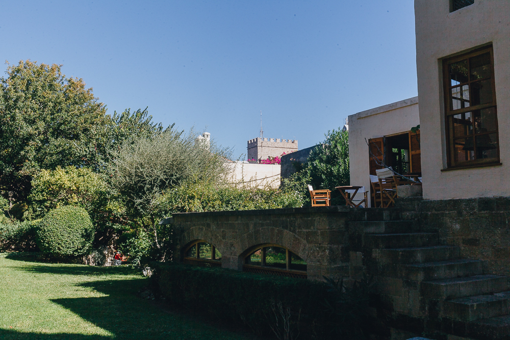
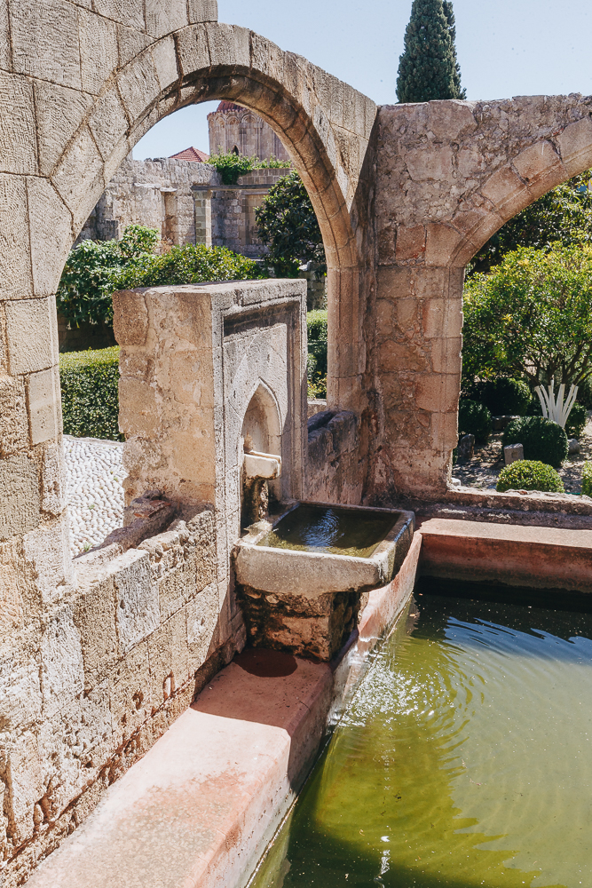
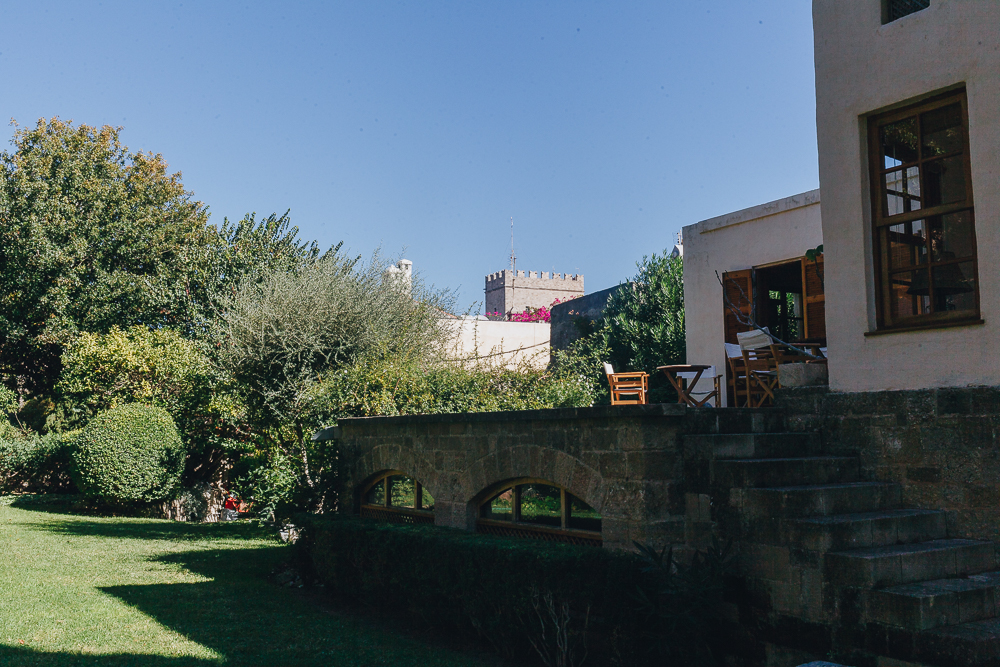
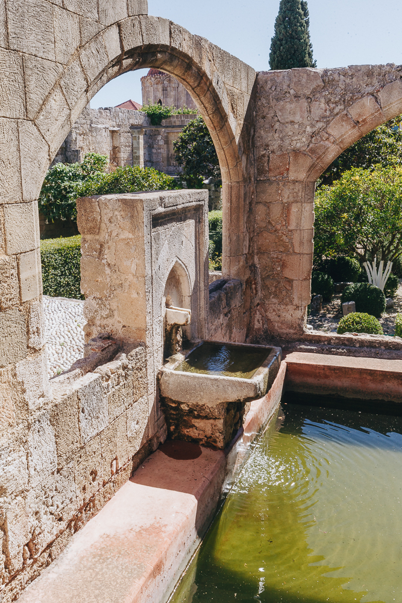

Rhodes Global
Leadership Retreat

Leading from Within
Acknowledging and Releasing your Potential
Leadership inspires performance. How can you continue improving your ability to motivate groups and individuals to achieve tangible results? In an increasingly complex and rapidly-moving world, grounding and connecting to self is essential in order to build leadership capacities.
A key factor in successful leadership lies in your ability to know yourself and be aware of the impact that your behaviors and attitudes have on your team and other key stakeholders. By knowing your patterns, empathizing with others, and being aware of your environment, you enhance your sense of responsibility (the ability to respond). The goal of this leadership retreat is to uncover and release your innate potential by examining the following basic human principles of being a leader:
Why I should attend
With practical tools, coping skills, techniques, and inner knowledge you will leave with greater appreciation of yourself and insight into your next developmental step towards becoming the leader you are meant to be. Fun and curiosity will lead you to new perspectives and widen your personal and professional horizons.
We all have the resources to motivate and inspire others. Working collectively on leadership skills can trigger feelings, thoughts, and behaviors that sit more deeply within than we realize. Practice and patience are needed to allow new ‘modus operandi’ to become habits. This retreat is a significant step in supporting you on your journey.
Who would most benefit from this
Team leaders, managers, entrepreneurs, project managers, people in leadership roles regardless of organizations, as well as any person committed to becoming a more inspirational leader, a catalyst for change.
If you feel inspired by the retreat, but are not sure if it is for you, get in touch with one of our hosts.
We will be happy to talk to you to provide more clarity around your decision.
Contact us: info@insightsbeacon.com
The focus of this retreat is clearly in the power of Self Awareness, Leadership and influencing change. Paramount in achieving this goal is to work as a team and co-create a safe space where we can speak openly and tap into our collective wisdom. To this end, the framework will be a combination of Art of Hosting, Participatory Leadership methods, and experiential learning consisting of open dialogue, personal assessments, sharing stories, hands-on learning, and self-reflection.


Quote

"Only together we can be wise"

"Everything you need is around you!"

Why Rhodes and Greece?
“Everything in Greece, mountains, rivers, seas, valleys get humanised… and speak to the human in an almost human language. They don’t cover or smash him/her, they don’t suppress they become friends and collaborators. The blurry, bending cry when transiting the light of Greece gets crystallised, humanised it becomes logos…
Greece is the filter that sculptures the animal into human, the slavery into freedom and the drunkness into sober pondering…Giving person to the impersonal, measure to the immeasurable…balancing the conflicting blind forces… this is the mission of the much-tortured land and sea that is called Greece.” ~ Nikos Kazantzakis, Greek Author
The words above by Nikos Kazantzakis, while written a few decades ago, reflect the timeless quality of Greece, one that exudes the humanness of friendliness and hospitality. Greece (and Rhodes in particular) is a geographical and psychological crossroad between East and West. Rhodes has been a place for hosting pilgrims of the three main religions of the Middle East. It has become a natural and warm meeting place where diversity and reconciliation have been a core part of her journey. It is precisely this hospitable spirit, this ancient core principle of “Philoxenia”–being friendly to the guest–that sets the stage as our framework for this Global Leadership Retreat.
 



Fondation Marc de Montalembert
Fondation Marc de Montalembert will be hosting us for this Leadership Retreat. It is a unique and special place nestled and hidden in the Medieval Town of Rhodes. Dedicated in the memory of Marc de Montalembert and his vision of a peaceful world rich in cross-cultural dialogue and understanding, the setting offers a window to the various ancient Greek cultures, from the Hellenistic period to the medieval and Ottoman.
Tucked away and protected from the hustle and bustle of the old town, the venue offers an open and inspiring space for supporting young people, as well as for hosting gatherings on diversity, human evolution, open dialogue, creativity, and peace. With a big open space, the ottoman “hayat”, and smaller open-air and in-house artfully created corners, the Foundation provides ideal and very special facilities and atmosphere, for this international retreat. The Foundation’s jewel though is its garden: the home of native plants, herbs, trees and flowers from the Mediterranean region. A place for serenity, connection, and wholeness, its beauty supports our collective intention of Leading from Within.

For people coming from Greece or Argentina, inquire about our reduced fees
info@insightsbeacon.com
Price includes Tuition, a welcome dinner on October 15th and daily coffee breaks.
Other meals, travel and lodging are not included in the fee.
Secure your enrollment
Feeling inspired by the retreat, but budget may be an issue? Please get in touch with us (include button).
Accommodation
The retreat will happen at Fondation Marc de Montalembert right in the middle of the medieval town, close to the crystal clear waters of the Aegean.
There are many options within the city for all budgets. Any place in the city will be at a walking distance from the venue.
Meals
Close to the venue there are plenty of options for all preferences. At a walking distance there are traditional Greek ‘tavernas’ and a variety of local and Mediterranean cuisine, in the Old Town, the area where the venue is located. You can find even more variety in the newer part of town, which is also a great place to stroll around and be closer to the Aegean.
En la actualidad las empresas utilizan los tableros de control o ‘dashboards’ para llevar a cabo procesos de gestión decisivos como son:
Los mismos deben medir las siguientes perspectivas: Financiera, Del Cliente, Procesos Internos, Aprendizaje y Crecimiento.

Estos permiten equilibrar los resultados a corto y a largo plazo y alinearlos a la estrategia. Sin embargo, un buen tablero de control no sólo debe incluir medidas de resultados sino también de indicadores de desempeño (drivers).
Los tableros pueden ser: Operativos (para el seguimiento diario de un sector o proceso), Directivos (para monitorear los resultados de las áreas clave) y/o Estratégicos (si se quiere medir la evolución de la empresa en el mercado).
La buena noticia es que para confeccionar un tablero no se necesita una inversión significativa en software especializado.
En Insights Beacon te podemos ayudar en: